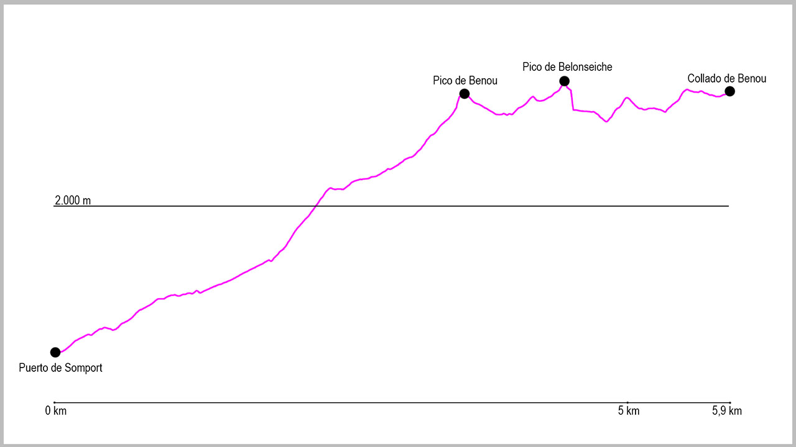

Desde el puerto de Somport nos situaremos detrás del edificio de conversación de carreteras. Justo allí, al lado de una fuente que podemos usar para coger agua, sale un camino en dirección norte. Este camino sube ligeremante unos 100 metros para girar 90 grados a nuestra derecha y poco a poco dirigirse hacia la estación de Astún.
Después de varias y cortas subidas y bajadas el sendero empieza a ganar altura rápidamente para situarnos sobre la carretera de entrada a la estación de esquí. Cuando ya llevemos unos 500 metros el camino empieza a llanear y nos conduce rápidamente a un dique vacío para las avalanchas. Lo cruzaremos por la ladera de la montaña, dejando el dique a nuestra derecha, y nada más salir del barranco llegaremos a una pista. La cogeremos en sentido ascendente, a la izquierda, y continuaremos por ella medio kilómetro hasta llegar a otro dique, este mucho más grande. Justo es el final de la pista y, a nuestra izquierda, veremos un hito desde donde comienza el camino que nos llevará al collado de Arnousse.
La primera parte de la subida transcurre por un cerrado valle de hierba que nos hace ganar altura rápidamente y que nos sitúa ya en unas campas de hierba por encima de los 2000 metros. En este momento, giraremos a la derecha en dirección norte para localizar un gran collado (con un cartel en el centro) que nos servirá de orientación para llegar hasta él.
Una vez lleguemos a este punto, la ruta seguirá en su mayor parte por la divisoria entre España y Francia. La primera subida hacia al pico Benou es bastante cómodo, aunque empinada, pero las vistas son excepcionales. Justo en la cima, en lugar de seguir por el cordal, giraremos brevemente a la derecha y luego a la izquierda para coger una traza que cruza a media ladera el primer tramo de cresta por donde continúa el camino. Desde aquí llanearemos un rato hasta el último repecho para alcanzar en este caso el pico Belonseiche.
Después de esta cima, tendremos una rápida bajada hasta el collado de Audas, antes de afrontar la última subida del recorrido. La primera parte hacia la Punta de Escalar es cómoda, pero justo antes de llegar a la cima tenemos un pequeño tramo donde tendremos que extremar la precaución e incluso echar alguna mano a la roca para poder continuar.
Una vez sorteado este punto solo nos quedará continuar por la cresta y desfrutar de las vistas hasta alcanzar el final de la ruta en el Col de Benou.
